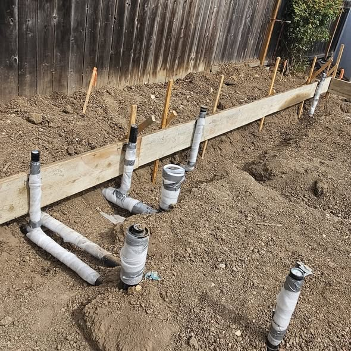

Kitchen and bathroom plumbing in Boynton Beach covers the two rooms where everything either works quietly or goes wrong expensively. Whether you are moving a sink three feet or gutting a bathroom to the studs, the plumbing has to be planned before the tile goes down. We run kitchen and bathroom plumbing from our home base in Boynton Beach and across the county, including Boca Raton and Delray Beach.
We work in two stages. Rough-in happens while walls are open: supply lines, drain and vent runs, valve bodies and shower pans. Trim happens at the end: faucets, toilets, tub fillers and disposal, all set and tested.
Getting the rough-in right is what prevents the classic remodel disasters, such as a vanity drain that sits an inch too high, or a shower that drains slowly forever because the trap arm has the wrong fall.

Warning signs
Plumbing Decisions to Settle Before a Kitchen or Bathroom Remodel
These are the questions that cost the least to answer before the walls close.
- Are you moving the sink, tub or toilet locations?
- Does the shower need a pressure-balanced or thermostatic valve?
- Will there be a freestanding tub needing floor plumbing?
- Is a pot filler or filtered tap going in at the range?
- Does the drain line have enough slope for the new layout?
- Is the existing vent stack in the right place?
- Will a new dishwasher or disposal need a dedicated connection?
- Are the old shutoffs and supply lines being replaced too?
Moving a toilet more than a few feet usually means opening the slab. Knowing that early lets you decide whether the new layout is worth it.
What the visit includes
Remodel Plumbing Rough-In and Trim Out Services
Two visits, clearly scheduled, so your tile setter and cabinet installer are never waiting on us.
Walkthrough and plan
We review the layout with you or your contractor and flag anything the drawings cannot support.
Rough-in
Supply, drain and vent installed to code, valve bodies set at correct depth, pressure tested and inspected.
Coordination
We hold the schedule with the tile, cabinet and countertop trades so nothing is installed out of order.
Trim out
Fixtures set, disposal and dishwasher connected, everything tested and the room left clean.
Planning a kitchen or bath remodel?Call to get the plumbing scoped and priced before demolition starts.

Sequence
How Remodel Plumbing Fits Into Your Renovation Schedule
Plumbing shows up twice in a remodel, and both visits have to land at the right moment or other trades sit waiting.
Before demolition
We walk the layout with you or your contractor and flag anything the drawings cannot support: a toilet move that requires cutting slab, a vanity drain with nowhere to vent, a shower location that cannot achieve proper fall. Catching this on paper costs nothing. Catching it after tile is set costs a great deal.
Rough-in stage
With walls open, supply lines, drains and vents are installed, valve bodies set at the correct depth for the finished wall thickness, and shower pans prepared. Everything is pressure tested and inspected before drywall closes.
Waiting on inspection
This is the step homeowners underestimate. Walls cannot close until the plumbing rough-in inspection passes, so it needs to be scheduled rather than assumed.
Trim out
Once tile, cabinets and countertops are in, we return to set faucets, toilets, tub fillers, the disposal and the dishwasher connection, then test everything and clean up.
Coordination
We hold dates directly with your tile setter, cabinet installer and countertop fabricator so nothing gets installed out of order, which is the most common cause of remodel delays.

Boynton Beach conditions
What Boynton Beach Remodels Run Into
Slab construction is the constant. Because drain lines run under concrete, any change to a toilet or shower location means cutting and repouring slab. Sinks and vanities have more flexibility because their drains can often be rerouted in the wall.
The second issue is what we find when the wall opens. In homes from the 1960s and 1970s that usually means cast iron drain stacks with heavy internal scale, and sometimes galvanized supply. Both are worth replacing while the wall is open, since the labor to reach them is already paid for.
Permits are the third. The City of Boynton Beach requires permitted plumbing work on remodels, and inspections happen at rough-in and at final. Skipping this creates real problems at resale. We pull the permit and manage both inspections as part of the job.
Behind the walls
What Boynton Beach Remodels Find Inside Older Walls
Opening a wall in a home built before 1980 usually reveals something worth addressing while access is free.
Cast iron drain stacks
Fifty-year-old cast iron is typically scaled heavily, with the bottom channel eaten away. Replacing a section while the wall is already open costs a fraction of doing it later, because reaching the pipe is the expensive part.
Galvanized supply lines
If the home still has galvanized steel, this is the moment to replace it. It rusts closed from the inside, and a beautiful new bathroom fed by a quarter-inch effective pipe will never have decent pressure.
Missing or improper venting
Older bathrooms were sometimes vented informally or wet vented in ways current code does not accept. Slow-draining fixtures and gurgling traps usually trace back to this, and a remodel is the right time to correct it.
Slab realities
Because drains run under concrete, moving a toilet or shower more than a short distance means cutting and repouring slab. Sinks and vanities are more flexible since their drains can often be rerouted through the wall. Knowing the difference early lets you decide whether a new layout is worth the cost.
Permits protect resale
Boynton Beach requires permitted plumbing on remodels, with inspections at rough-in and final. Unpermitted work creates real problems at closing, and correcting it later costs more than doing it right.
Pricing
Kitchen and Bathroom Remodel Plumbing Cost
Remodel plumbing is quoted per project after a walkthrough, because a fixture swap and a full relocation are different jobs entirely. You get a written scope that lists rough-in, trim and permits separately, so you can see exactly what you are paying for.
- Layout. Fixtures stay where they are, versus sink, tub or toilet relocations needing new drain and vent.
- Access. Walls and floors already open, versus cutting into finished tile, stone or ceilings.
- Fixture complexity. Standard valves and trim, versus thermostatic valves, body sprays or freestanding tub fillers.
- What is found inside. Sound existing pipe to tie into, versus cast iron or galvanized that must be replaced to pass.
- Inspections. A single rough and trim, versus multi-stage inspections on a larger remodel.
Find out before you book. Describe it to (833) 567-2788 and you will know the likely range before committing to a visit.
Before you call
What to Settle Before the Rough-In
Remodel plumbing goes wrong at the planning stage far more often than at the wrench. Work these out first.
- Confirm whether any fixture is moving location, which changes drain and vent runs.
- Choose the fixtures before rough-in; valve depth depends on the finished wall thickness.
- Check what is below the bathroom, because a second-story relocation is a different job.
- Agree who supplies what, and have the fixtures on site before trim day.
One thing not to do: Do not let tile go on before the plumbing inspection. Opening a finished wall to correct a valve depth is the most expensive mistake in a remodel.
Urgency
When Does Remodel Plumbing Become Urgent?
Remodel work is scheduled by nature. It becomes urgent when:
- A capped line was left under pressure and has started to weep.
- A drain was opened and sewer gas is entering the house.
- The only working bathroom has been taken out of service unexpectedly.
- Water appears in the ceiling below a newly roughed-in bathroom.
If any of those describe what you are seeing, call (833) 567-2788 now rather than booking online. Emergency calls are moved to the front of the queue.
FAQs
Kitchen and Bathroom Plumbing FAQs
Can I move my toilet to the other wall?
Usually yes, but it means cutting the slab to reroute the drain with proper fall. We will price it before you commit to the layout.
Do you work with my general contractor?
Yes, routinely. We coordinate rough-in and trim dates directly with their schedule.
Should I replace the cast iron while the wall is open?
Almost always. Reaching that pipe is the expensive part, and it is already exposed.
How long does bathroom rough-in take?
One to two days for a standard bathroom, plus the inspection wait before walls close.
Do I need a permit for a fixture swap?
Not for a like-for-like faucet or toilet. Yes for moving drains, adding fixtures or replacing supply lines.
Do I need a permit to remodel a bathroom?
If you are moving drains, changing valves in the wall or altering venting, yes. A straight like-for-like fixture swap generally does not. The permit is pulled for the plumbing scope and the inspection is scheduled around your tile and cabinet work.
Related plumbing services
Services Commonly Added During a Remodel
The jobs that most often share a visit with this one.
Faucet & Fixture Installation
Trim day is where a remodel either looks finished or does not, and the fixtures have to be on site before it starts.
Garbage Disposal Repair & Installation
A new sink usually means a new disposal and a reworked trap arm, which is where most post-remodel kitchen clogs come from.
Pipe Repair and Installation
Open walls are the cheapest time to replace old supply line, because the restoration cost is already being paid for.
View all 16 plumbing services →
Kitchen and Bath Plumbing Near You in Palm Beach County
- Kitchen and Bath Plumbing in Delray Beach
- Kitchen and Bath Plumbing in Lake Worth Beach
- Kitchen and Bath Plumbing in Lantana
- Kitchen and Bath Plumbing in Boca Raton
- Kitchen and Bath Plumbing in Wellington
- Kitchen and Bath Plumbing in Greenacres
- Kitchen and Bath Plumbing in Hypoluxo
- Kitchen and Bath Plumbing in Ocean Ridge
- Kitchen and Bath Plumbing in Manalapan
- Kitchen and Bath Plumbing in Palm Springs
- Kitchen and Bath Plumbing in West Palm Beach
- Kitchen and Bath Plumbing in Highland Beach
Planning a kitchen or bath remodel?
Get the plumbing scoped and priced before demo starts, anywhere in Boynton Beach.